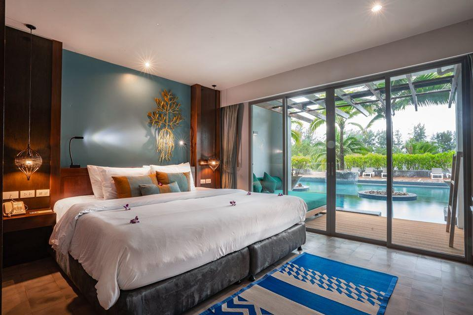
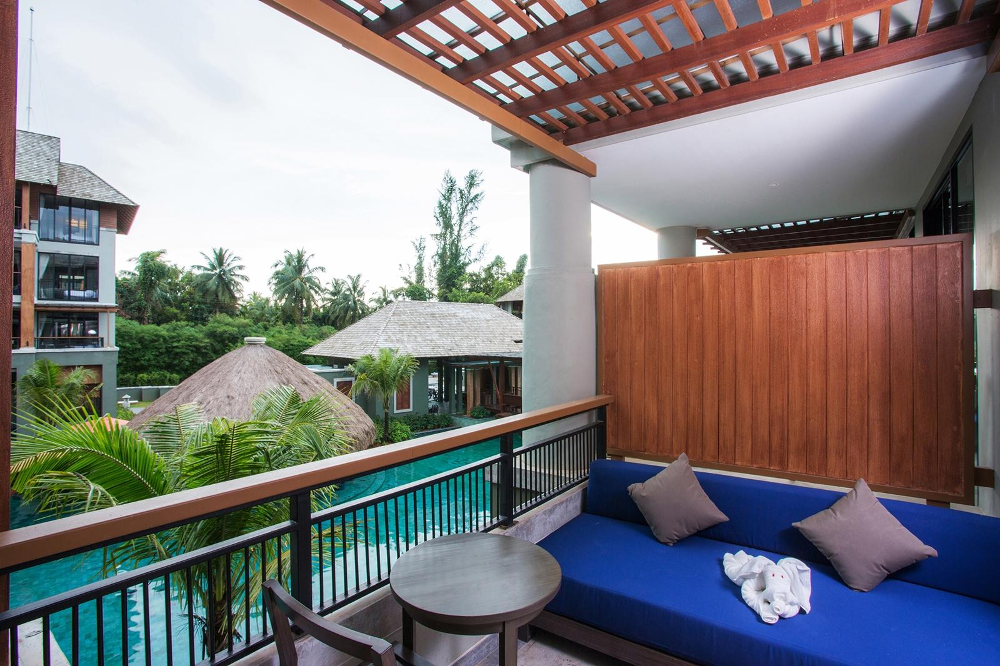
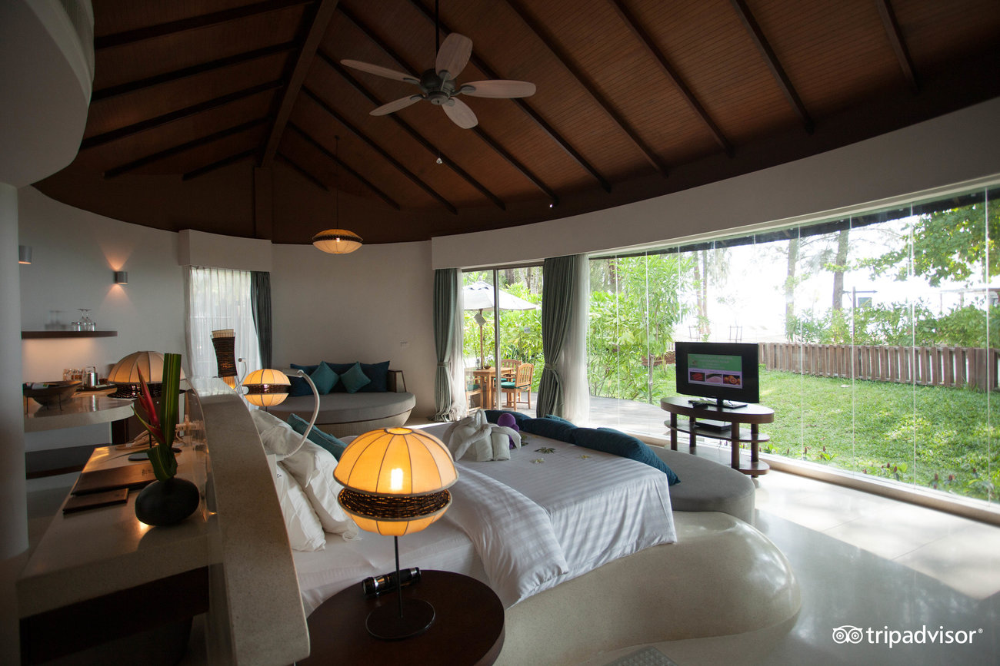
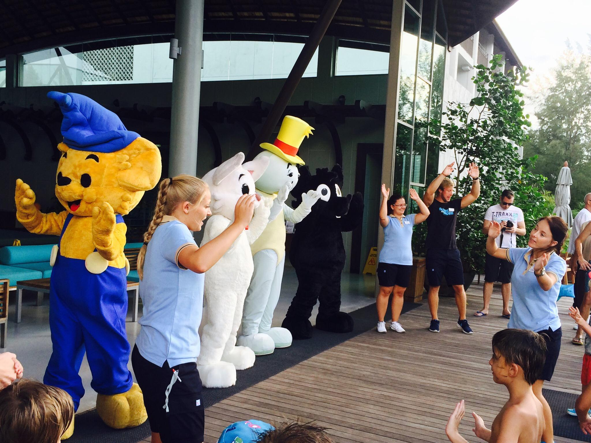
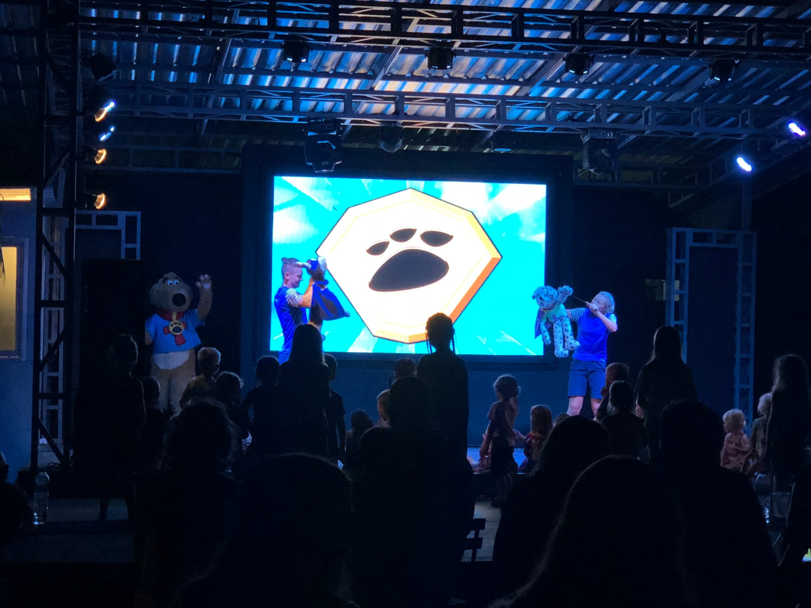
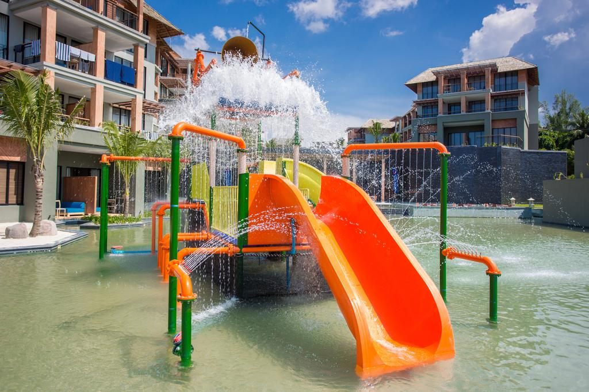

Om Mai Khao Lak Beach Resort & Spa
Mai Khao Lak Beach Resort & Spa är ett utav dom bästa hotellen tillgängligt i Khao Lak (Thailand) med ett omdömme på 4,8/5 stjärnor. Hotellet har en kapacitet på 306 rum med städning varje dag, Mai Khao Lak erbjuder dig 4 typer utav rum. Sviter, Rum med havsutsikt, Rökfria rum och även familjerum. Alla rum på hotellområdet är nyrenoverade och har alla en platt-tv gjord för underhållning, ett eget kylskåp, garderober, ett värdeförvaringsskåp och en balkong eller uteplats beroende på vilken våning du bor på. Det finns även rum med pool-acces där du kan gå ner rätt i poolen från ditt hotellrum. Hotellet erbjuder även room-service till alla rummen där du både kan beställa lunch, middag & dryck och för att lättare ta dig runt på området erbjuder Mai Khao Lak dig skjuts i golfbilar som tar dig vart du vill runt om på hotellet ändå ner till stranden.
Bilder på hotellrummen
  Hotellet har en del bekvämligheter som underlättar ditt besök. Hotellet erbjuder kostnadsfri parkering på deras område, Kostnadsfritt höghastighetsinternet både på alla hotellets områden och inne på rummen, 3 stycken pool områden varav en är till för dem vuxna och en annan till för barnen där det finns äventyrsbad och dylikt. Hotellet erbjuder även dig ett gym, en tennisbana och diverse aktiviter såsom pingis, Flertal barer och även barnpassning för dem föräldrar som behöver egentid. Hotellet är väl anpassat för barn familjer och erbjuder otroligt många aktiviter för dem yngre. Mai Khao Lak erbjuder barnen en egen barnklubb där det varje dag erbjuds en mängd olika aktivitet från fotboll till dans och skattjakter. En lekplats på området med både gungor och rutschkanor sedan även en film visning på kvällen för alla barnen klockan 20.00 och senare vid 22.00 en show med sång och dans för dem lite äldre.
Bilder på diverse barnaktiviteter
  På Mai Khao Lak Beach Resort & Spa finns det ett nära utbud på 6 stycken resturanger både inne på hotellområdet men även på den närliggande stranden bara några meter utanför själva hotellet. För bara en billig peng och bara ett stenkast iväg kan du njuta av riktig god och smakrik mat. Om du vill komma iväg från hotellområdet och se något nytt kan du ta en Tuk-tuk taxi in till en närliggande "by" vid namn Bang Niang och besöka matmarknaden vid namn Bang Niang Market. Där det serveras nylagad thaimat, färska juicer och smoothies, egen plockade kokosnötter och mycket mer.
Restauranger